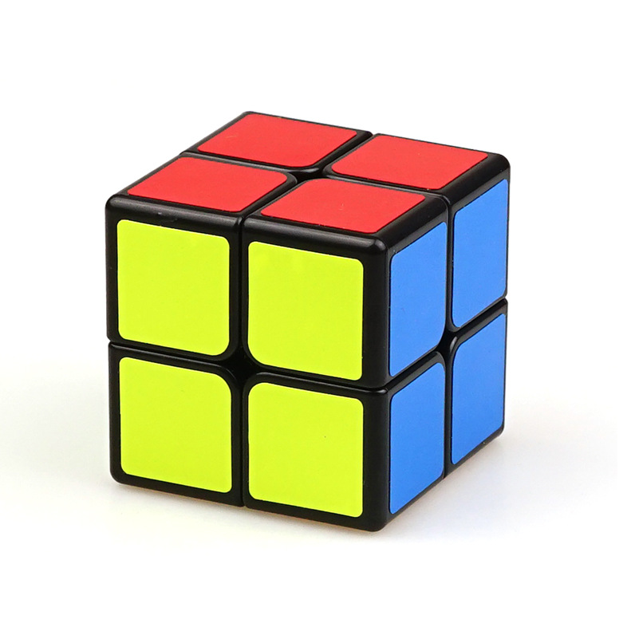
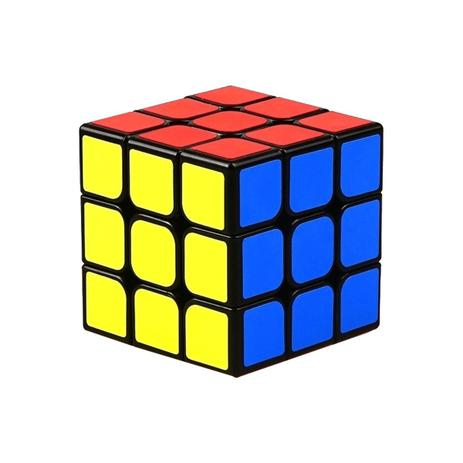
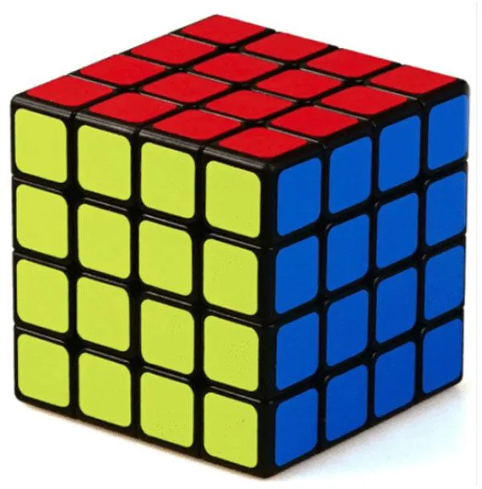

Conheça os cubos 2x2, 3x3 e 4x4!

2x2
Esse é um cubo teoricamente simples, ele pode ser resolvido rapidamente, mas isso não significa que seja fácil resolve-lo.
- Nº de peças: 8
- Recorde mundial: 0.69s
- Melhor média: 1,54s
- Recordista: Christian Kaserer

3x3
Com certeza o cubo mais popular de todos os tempos. Existem diversas formas de resolver, chamados de métodos de rsolução. Ele é a base para se resolver outros cubos.
- Nº de peças: 20
- Recorde mundial: 4,22s
- Melhor média: 5,69s
- Recordista: Feliks Zemdegs

4x4
Uma "evolução" do cubo 3x3, o cubo 4x4 é talvez uma junção de fórmulas do 2x2 com o 3x3. Por ser formado com um número par, ele não possui centros assim como o 2x2 e possui fórmulas a mais que o 3x3.
- Nº de peças: 56
- Recorde mundial: 17,42s
- Melhor média: 22,80s
- Recordista: Sebastian Weyer